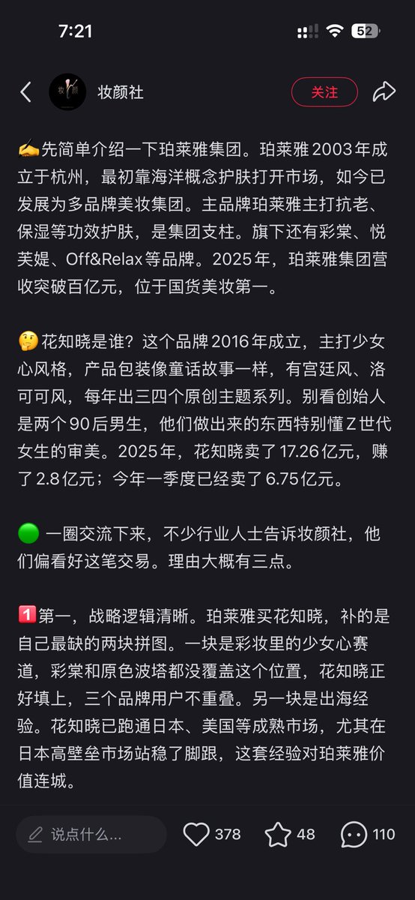

スパイシスペース
@SpicyspacEmk16
花知晓真是我美妆产品白月光！虽然她们家产品我个人用起来感觉性价比没那么高可是真的很漂亮😭
除开一些涂涂抹抹产品以外她们家的刷子或者小镜子还有一些小物件什么的我真的认为是超级绝美又好用 肯定一定绝对能让小女生一眼沦陷😭

ccccccccc.
@Ccccc0104
好厉害啊……两个coser在2016年开的牌子，短短10年发展到这样，被收购应该财富自由了吧😭我最先就是这两个人的粉丝来着，说要做彩妆还以为是闹着玩…… https://t.co/tR9H39rSCc